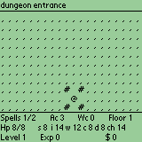
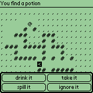

iLarn keyboard support
as of version 0.25; email me if you notice forms without support
as of version 0.25; email me if you notice forms without support

This is the form you are in most of the time. There is not much to say about it. Any one-letter command that works for graffiti should work when typed on the keyboard. You should also enable "hjklyubn" movement in the Bindings menu option; it's disabled by default since I had a sad tendency to accidentally write 'l' during combat instead of 'c' (and die; oh, the embarrassment).

![[entering dungeon]](../images/iLarn/3townE.gif)
(This form has four buttons, but 1 or 2 of them may be disabled.)
It pops up when you step on an item and offers you a choice of actions. (The original author made sure that each action starts with a different letter.) Instead of tapping the button, just type the first letter of the action: type d to drink the potion, or g to go inside the dungeon, etc.
When you type c to cast a spell, you enter a form with a
list of spells:
a) protection
b) magic missile
etc.
To select a spell, just type its index letter: type b to
cast magic missile, etc. Hm, it looks like I don't have a keyboard
shortcut for the buttons, though - you will still have to tap them
in this version.
a side note: the same form is used for genocide and for the genie, but keyboard support is not enabled there in this version (they are rare cases).
There are three "stores" that all use the same form.
Let's go back to the town for a bit...
![[town screen]](../images/iLarn/2town.gif)
This is the store where you can buy stuff. There are pages and pages of stuff (with some gaps).
Type Space (a space, " ") to select the first item in the list. If you keep
hitting Space you will cycle through all the items on that page.
To get to a different page, < will go back a page and
> will go forward a page.
To buy the item that is currently selected, type B.
To exit the store, type X.
Enrolling in courses takes time, but raises your ability scores.
Type Space to select the first course in the catalog, and you can keep
typing Space to cycle through all the courses.
To enroll in the course that is currently selected, type E.
To exit the college, type X.
Here you can sell gems from your inventory, or, make a cash transaction.
If there are gems listed, you can type Space to select/cycle just like
in the previous two stores. (You can't type the index letter to select,
it would be relatively easy to transplant the code to do that, but not sure
if it's particularly worthwhile.)
To sell the gem that is currently selected, type S.
To initiate a transaction (deposit or withdrawal), type T.
To exit the bank, type X.
This is the form used for deposit/withdrawal at the bank, and it is also the form used for dropping gold in any old location or donating to an altar. (When you are not in the bank, your account is not displayed, and the second "[=]" button to copy your balance into the text field is disabled.)
If you are in the bank,
type = or Y to copy your wallet contents (displayed)
to the text field,
or type B to copy your bank balance (displayed)
to the text field,
or if you want to type some other number into the text field, I am
afraid you will have to tap on the text field to activate it (I'm not sure
how I can automatically activate it). Then you
can type numbers.
Type D to deposit the amount shown in the field,
or type W to withdraw the amount shown in the field.
To exit/cancel, you can type C, N, or X.
If you are not in the bank, everything is the same, except that B (balance) and W (withdraw) are not an option. To drop "none", type N.
Ahhh the Larn Revenue Service. (Ever wonder whether a fireball could just take them out? Better not to try it.)
If you don't owe any taxes, there's only one option. Type X to exit.
If you do owe taxes, there are two options for paying them. For those with cash on hand, tap on the field, type in an amount, and type P to Pay Cash. If, on the other hand, you have frozen assets in the bank, you can type R to Request a Transfer, whereupon the game will give you a little simulated bureaucratic hassle, so you may have to hit R a few times.
Some stores refuse to deal with people who owe taxes. Type X to exit.
Under the covers, this is the same as the tax evader form. Type X to exit.
Inventory and trading post are the same form.
Write the index letter (a to z of an item to select it. This will activate some buttons.
If you are in the trading post, these buttons will be Sell and Exit.
Type S (or just hit Enter) to sell the selected item
Type X to exit.
If you are in the inventory, there may be up to four buttons.
![[inventory]](../images/iLarn/8inv2.gif)
The first button is "do the obvious thing". The second button is
"drop" (disabled if you can't drop items at your current location).
The third button is "wield" (disabled if wielding is already the
obvious thing or if this item really can't be wielded). The last
button is "cancel".
To "do the obvious thing", just hit Enter (or
Return or however it's marked on your keyboard).
To drop, type D - yes, capital letter, I know the buttons
here are lower case (makes them skinnier and able to fit), but d
is already an inventory item so we'll just have to get over it.
To wield, if non-obvious, type W.
Type C (or X) to exit.
If you prefer you can instead type 1, 2, 3 for the first, second (drop), and third (wield) buttons.
If you find that something is missing or not working or stupid, send me email.
What is iLarn?
Current status
Download iLarn
How to play;
town;
keyboard shortcuts
Configuring color
How to get source